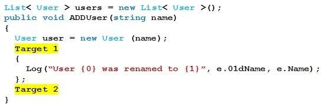
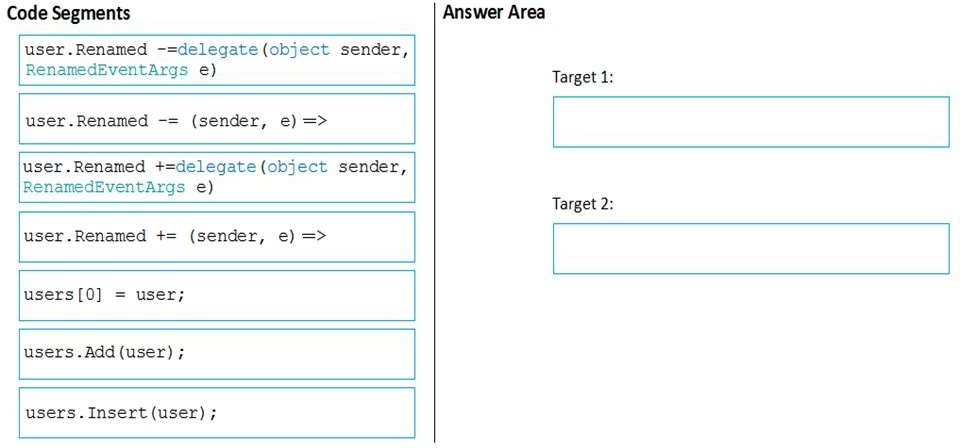
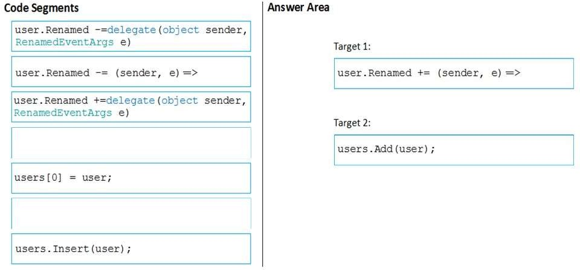

|
DRAG DROP You are implementing a method that creates an instance of a class named User and adds the user to the users list. The User class contains a public event named Renamed. The following code segment defines the Renamed event: Public event EventHandler<RenameEventArgs> Renamed; You need to create an event handler for the Renamed event by using a lambda expression. You have the following code:  Which code segments should you include in Target 1 and Target 2 to complete the code? To answer, drag the appropriate code segments to the correct targets. Each code segment may be used once, more than once, or not at all. You may need to drag the split bar between panes or scroll to view content. NOTE: Each correct selection is worth one point. Select and Place:  Correct Answer:  Section: Volume A Explanation Explanation/Reference: ExplicaciónEn este ejercicio es necesario saber como funcionan los delegados y los eventos para poder hacer el ejercicio. En este ejercicio no tenemos opciones por lo que solo tenemos que probar la respuesta dada para ver si da la solución querida. Respuesta:La respuesta dada por el ejercicio, opción: Caja 1: user.Renamed += (sender, e)=> Caja 2: users.Add(user);Fuentes:https://www.tutorialsteacher.com/csharp/csharp-event https://docs.microsoft.com/es-es/dotnet/api/system.eventhandler?view=net-5.0 https://docs.microsoft.com/es-es/dotnet/csharp/language-reference/keywords/event |